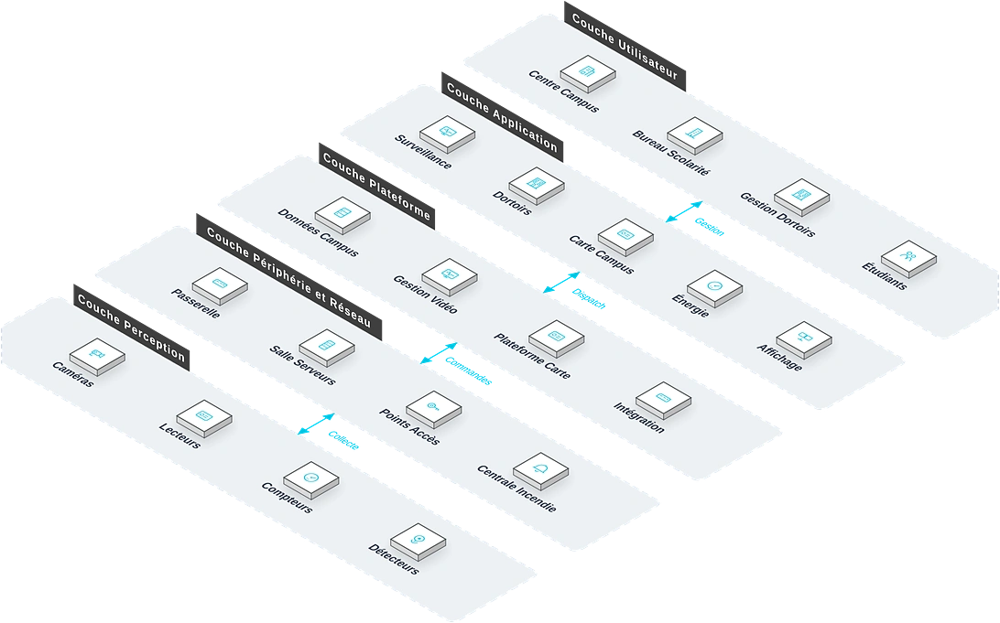

Pour les établissements allant de la maternelle à l'université, une solution de campus intelligent quatre-en-un sûreté-enseignement-logistique-lien école-famille qui répond aux points de douleur clés que sont les risques de sécurité, la gestion désordonnée des ressources pédagogiques, la faible efficacité logistique et la communication insuffisante école-famille, bâtissant un environnement scolaire sûr, pratique et intelligent.
Vue d'ensemble
Fournit aux établissements de tous niveaux une solution de campus intelligent quatre-en-un sûreté-enseignement-logistique-lien école-famille, répondant aux risques de sécurité, à la gestion désordonnée, à la logistique peu efficace et à la communication insuffisante, et bâtissant un campus sûr, pratique et intelligent.
Applicable à : Maternelles, écoles primaires et secondaires, universités, écoles professionnelles, organismes de formation.
- Conception modulaire configurable selon la taille de l'établissement
- Plateforme unifiée réduisant les coûts de maintenance multi-systèmes
- API ouvertes pour l'intégration aux systèmes de scolarité existants
- Forte de l'expérience de livraison de grands projets tels que FIRS et Mile 2
Bénéfices : Gestion de la sécurité scolaire améliorée, allocation optimisée des ressources pédagogiques, énergie réduite, satisfaction accrue des élèves et du personnel.
Défis Métier
Dans la gestion quotidienne des établissements scolaires, les clients font souvent face à des risques sécuritaires, une allocation de ressources difficile et une logistique peu efficace ; ils ont besoin d'un système de campus intelligent sur plateforme unifiée, aux API ouvertes et à la configuration flexible, adapté à toutes les tailles d'établissement.
Risques sécuritaires
Défense du périmètre faible, entrée facile d'inconnus et gestion grossière des entrées et sorties d'élèves.
Gestion chaotique des ressources pédagogiques
État du matériel multimédia inconnu, confort des salles non maîtrisé, appels faits à la main.
Logistique peu efficace
Inscriptions papier en internat, règlement de cantine lent, circuits de réparation longs.
Fossé d'information école-famille
Les parents ne suivent pas les arrivées ; les informations de l'école touchent peu de monde ; la réponse d'urgence comme la communication courante en pâtissent.
Sécurité et pédagogie pénalisées
Informations de périmètre, d'accès et de présence en retard : interventions lentes, confiance des parents et efficacité pédagogique entamées.
Défense sécuritaire tous scénarios
Contrôle d'accès, vidéosurveillance, périmètre et alarme en une touche doivent former une boucle fermée.
Lien école-famille en temps réel
Les entrées et sorties doivent notifier automatiquement les parents ; les actualités doivent les atteindre avec précision.
Scénarios typiques :
Rôles concernés : Direction de l'établissement, enseignants, équipes de sécurité, équipes logistiques, parents.
Architecture
Campus Intelligent repose sur une topologie métier à cinq couches : Centre Campus, Bureau Scolarité et autres bureaux utilisent les applications quotidiennes comme Surveillance et Dortoirs, coordonnés par la couche plateforme ; les équipements de périphérie (Passerelle, Salle Serveurs) sur site raccordent les équipements de perception (Caméras, Lecteurs) : les données montent vers la plateforme et les commandes descendent jusqu'au terrain.

Disposition métier : la couche utilisateur regroupe les bureaux (Centre Campus, Bureau Scolarité…) ; la couche application porte les fonctions quotidiennes ; la plateforme fournit Données Campus et Gestion Vidéo ; la couche périphérie et réseau situe les équipements sur site (Passerelle, Salle Serveurs…) ; les équipements de perception sont déployés sur Caméras, Lecteurs et le terrain.
Modules clés
Sécurité du campus
Accès par reconnaissance faciale, vidéosurveillance intégrale, défense du périmètre et alarme en une touche.
Salles intelligentes
Pilotage de l'environnement, gestion du matériel multimédia et statistiques de présence.
Gestion intelligente de l'internat
Gestion des accès et statistiques des retours, avec alertes automatiques sur anomalies.
Cantine & logistique
Statistiques de dépense, circuit des tickets de réparation et pilotage énergétique.
Lien école-famille
Notifications d'entrée/sortie, validation des visites et actualités du campus pour les parents.
Capacités d'intégration :
- Une plateforme gère sécurité, scolarité, logistique et actifs du campus
- Les données de présence se synchronisent avec le système scolaire
- Les parents reçoivent les notifications d'entrée/sortie via l'application
Avantages et livraison
Avec une conception modulaire et une plateforme unifiée, nous aidons à élever la sécurité du campus et l'efficacité pédagogique et logistique, via une mise en œuvre module par module, l'intégration des systèmes, la formation et une maintenance pendant les vacances.
Avantages différenciants
Sélection modulaire flexible
Déploiement gradué de la maternelle à l'université ; modules à la carte, investissement souple.
Plateforme unifiée
Sécurité, pédagogie et logistique intégrées, sans silo et avec une maintenance réduite.
API ouvertes
Connexion transparente aux systèmes existants : investissements protégés, données partagées.
Expérience de Grands Projets
Appuyée par la livraison de systèmes intelligents sur de grands projets (FIRS Lagos, pôle d'échange Mile 2) : un déploiement mature et fiable pour les scénarios de campus.
Maintenance pendant les vacances
Maintenance centralisée durant les congés, sans perturber les cours.
Sécurité et pédagogie
Accès par reconnaissance faciale et systèmes multimédias au service de la qualité d'enseignement.
Processus de mise en œuvre
Étude des besoins
Recenser les besoins de sécurité, pédagogie et logistique selon la taille.
Conception
Sélection des modules et plan de construction par phases.
Réalisation par modules
Priorités : sécurité, pédagogie, logistique.
Intégration
Unifier modules et système pédagogique sur une plateforme.
Formation et remise
Former enseignants et encadrants par niveaux.
Optimisation continue
Ajuster la configuration selon les retours.
Garantie de service
Valeur client
Sécurité du campus renforcée, ressources pédagogiques optimisées, énergie réduite et satisfaction des élèves et équipes en hausse.